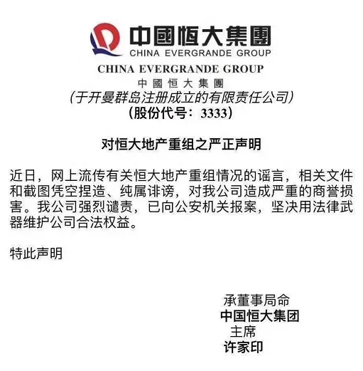

恒大辟谣网传报告有且只能是谣言
恒大辟谣，网传报告有且只能是“谣言”
昨天的恒大因一份网传报告被全民吃瓜，强势围观。
天机常看寻瑕妹纸的文章，她第一时间指出了事件潜在的预期发展态势： 0924-你看我还有机会吗？
果不其然，傍晚时分，恒大辟谣。谣言和辟谣把我等吃瓜群众搞得一脸懵逼。
近期新增的“讨论功能”，文末已开放。
** 壹 **
前后反复看了几遍恒大的辟谣公告。

首先，申明一下自己的观点，以免被删：我相信恒大的声明
 。
。
其次，公告中其实少了点东西，就是不知道恒大为什么不加上去，个人看来，只要多了这八个字，就可以让这份声明更有说服力：
** 本司资金状况充裕 ** 。
当然，只是站在旁观者的角度提个小建议。或许，可能，是恒大一不小心疏忽了，工作总难免有疏忽的时候。
再次，前后读了很多遍这声明，有点疑惑：声明中说，那份造谣的文件凭空捏造，那么是谁有这么大手笔能凭空捏造出这么详尽的数据？
为此，工作到凌晨三点中，逐一核对数据，发现大部分数据和过往媒体披露的恒大信贷数据高度吻合。或许，是从过往新闻媒体上抄下来的

但还有那么多其他数据呢？好友调侃道：假设剩余的其他数据为实，那么可能应该查一查财务总了。
毕竟，能伪造如此详尽的文件，整个中国怕是找不出几个： ** 财务总、集团最高层的高管、央行 ** 。
最后 ？最后就是谣言。让我们一起期待恒大的报警结果。
** 贰 **
那份谣言报告，相信很多人看过，大致内容分为四点：
主要问题：2016年以来重组的情况及潜在困境；表露忠心：恒大执行房地产调控政策的态度和行动；恒大的发展潜力、信用及身处头部的江湖地位；不能顺利完成重组的严重后果。
看完这份谣言报告，天机不禁想起小时候的事。
五六岁的时候，去爷爷家玩，八十年代初的生活条件还是比较差的。时值爷爷大寿，天机嘴馋，狼吞虎咽吃了最爱的鱼，一不小心被鱼刺卡住了喉咙。
跑去向爸爸求助：1、我被鱼刺卡住了（我已经无能为力了）。2、但是我想吃几个鸡蛋催吐，还是可以抢救一下的，你去跟爷爷说一下，就让我吃一次吧。3、爸爸你看我平时是不是很听你的话，是不是很乖？4、你要是不让我吃，我让鱼刺卡死了，就我一个独生子，后果你看着办吧。
面对这份谣言，恒大还没辟谣前，当时有人问我，恒大会成功吗？
天机不知道啊。只记得小时候，事件的最后，爸爸没有去跟爷爷沟通，直接用馒头塞进我嘴里，把我噎吐了。
那个被馒头塞得胀红了脸、眼泪齐刷刷滚下脸庞的小男孩，在印象中，是那么的不雅观。
长大后，我才知道为什么爸爸没有去跟爷爷说，因为爸爸的爸爸，叫爷爷。
** 叁 **
事件回到恒大辟谣后，国际评级机构巨头标普，下调了恒大的评级。
标普这种机构，一点都不专业

还是期待一下恒大报警的结果。毕竟这种事，普通百姓都是以结果说话。
在此，有个小小的建议，抓到始作俑者后，应该起诉对方，稳赢。为什么呢？
对方拿出证据的话，可以质问对方从何处得到的。假设始作俑者说是从ABC三个机构获取的资料，那么，恒大还可以把ABC三个机构搞了，说对方泄露自己的商业机密，要求赔偿。
ABC三个机构大概率会辟谣，否认，并推诿给始作俑者，说对方作伪。实在不行，还有机构临时工可以背锅。
况且，始作俑者从非正规渠道拿到的资料，司法一般不会认可和采纳。
那么，始作俑者就面临两难抉择了：
1、拿出资料，不一定被认可和采纳，还会牵连和得罪一大帮朋友。
2、不拿出资料，保下一众朋友们，那么只能承认自己是声明中说的：杜撰、凭空捏造。
最终的结果都只有一个：败诉。
和反腐是一个道理，只要不是房企自身通过行动和委托经侦部门等单位取得，而是外界等第三方私下通过非正规途径获取的，都不能在司法上被认可和采纳为证据。
什么是正规途径？即有相关部门的授权手续。这点读者中有很多律师从业者，很清楚这点，哈哈。
长大成年后，很多人才知道，世界并不是简单的黑与白，更多的，是灰。
希望恒大抓到始作俑者后，起诉对方，稳赢的局，为什么不做呢？然后又可以做一份声明给我等吃瓜群众。
文章写到这，天机拿起手机，默默下载了恒房通App，准备年底看看有没有机会。
不对，现在恒房通先改名叫恒大宝后又改名房车宝了。对于我等吃瓜群众来说，很贴切，恒大真是个宝

文章的最后，再次强调一下那份文件报告是假的。
文末左下角的“ ** 阅读原文 ** ” ，寻找组织，防失联。 本文底部有“讨论功能”。 公众号改版，将天机设为星标、常点文章右下角的“赞”和“在看”，可及时收到文章更新信息。

按日期浏览全部来源（同日按条目标识排序）